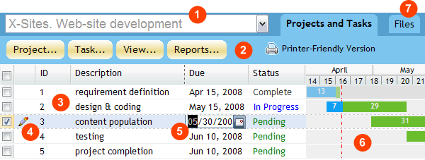
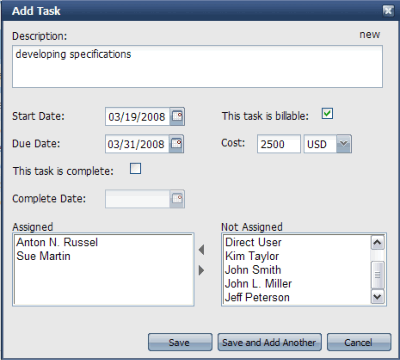
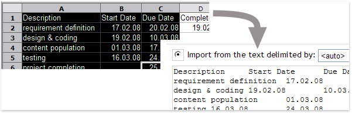
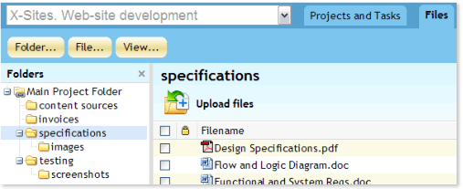
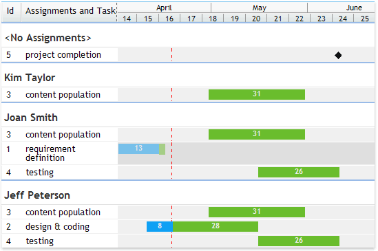

|
WebAsyst Projects at a glance
Here is your WebAsyst Projects main window:

- Project selector: Click to see the drop down list of available projects and select the project you wish to work with.
- Toolbar: Click a button (e.g. Project, Task, View, Reports) to open a pull down menu and access main functional buttons to add/edit project, add/edit tasks, customize view options and run reports.
- Task list: Displays a scope of tasks for selected project. You can sort the list by a click on a column title and expressly customize visible columns.
- Edit icon: Click a “pen” icon to open Edit Task dialog and change task properties, e.g. Start/Due/Complete dates, description, assignments, etc.
- Inline editing: Double click in a task list to edit task description or dates directly in the list without opening Edit Task form.
- Gantt Chart: Displays a graph of the project schedule with the use of colored bars based on a task start, due and completion dates.
- Files tab: Click to open a repository of files linked to selected project. Add files to the project, organize files in folders and share with your project team.
|
|
|
Creating a new project
Click Project -> Add Project in the toolbar. In the Add Project form enter project description, select customer from the pull-down customer list, and select project manager from the list of users.
If this project is for a new customer, you must first add this customer using Project -> Customer List.
Turn on Billable flag if you want to indicate that this project will be paid by the customer. Specify your project Start Date and click Save button. Your new project will open in WebAsyst Project main window and you will be able to add tasks to your project.
NOTE: Access to Add Project function, Project List and Customer List is customizable. You must have access to Users & Groups section to customize access rights for yourself or other users. |
|
|
Adding tasks to project
- Click Task -> Add Task.

- Enter a task summary in the Description field.
- Start Date and Due Date are optional, e.g. you can specify only Due Date to add a milestone or a key event date in your project.
- If you are adding a task that is already complete, check “This task is complete” flag and enter Complete Date.
- Turn on “This task is billable” flag and enter an estimated cost in the Cost field, if this task implementation is supposed to be paid by your customer.
- Assign personnel to the task from the list of users. You can select multiple users at once by holding Ctrl or Shift buttons on your keyboard, then click Left Arrow button to move selected users into Assigned list.
- Click Save button to add the task and return to the task list, or use Save and Add Another button to leave Add Task dialog open for adding next entry.
|
|
|
Importing tasks from a clipboard or file
There is a fast way to add a batch of tasks simultaneously by using Task -> Import Task. In the Import Task form you can manually type or copy and paste a list of tasks in the designated text area. You can also import tasks from a CSV (Comma Separated Values) text file.

Every task in the list prepared for import must take a separate line. All lines should be of the same format and can contain multiple columns delimited by TAB, semicolon (;) or comma (,) without spaces.
Columns available for import:
- Description
- Start Date
- Due Date
- Complete Date
- Billable
- Cost
- Currency
- Assignments
Every column's content can be quoted. If you want to use quotes inside of a task description column, you must quote the entire description, and precede every internal quote sign with an extra quote.
Sample: "description with ""internal"" quotes"
To import assignments quote the content of Assignments column and separate multiple user IDs with comma (,) without spaces.
Below is a sample list of tasks prepared for import that contains Description, Start Date and Assignments columns separated by TAB:
- task 1 04/05/2008 “JOHN,bob,Susan”
- task 2 04/15/2008 “bob”
- task 3 04/17/2008 “JOHN,Susan”
|
|
|
Giving other users access to your project
You can manage your project in collaboration with other users. Depending on user's role in the project you can assign one of the following access levels:
- Read (R) — user can view this project and tasks
- Write (W) — user can add/edit tasks to this project
- Full (F) — user can add/edit tasks, modify project details, complete/resume project and customize access rights to other users
Project Manager has always full access rights to a project.
To share project with others click Project -> Customize Access Rights. You can customize access rights individually for every user on the Users tab, or you can use Groups tab to give access to user groups (you must have access to Users and Groups section to create and handle user groups).
When setting access level to a project, the combination of personal and group access rights will be applied as shown in the sample table below:
|
Personal Permission
|
Group Permission
|
Effective Permission
|
|
-
|
Read
|
Read
|
|
Read
|
Write
|
Write
|
|
Full
|
Read
|
Full
|
NOTE: Customizing access rights is only available to the users who have access level "administrator" to the Users section of the WebAsyst account. |
|
|
Working with your task list
Task list is the main working area where you can browse a scope of work, add new tasks, change task details, etc. Most common operations in the task list are outlined below. |
|
|
Sorting your task list
Click a column title to sort the list. Click again to sort in descending order. If you want to sort expressly in ascending or descending order, point your mouse over the column title and click the small arrow button on the right to open local menu, then choose preferable sorting option. |
|
|
Selecting visible columns
Point your mouse over the column title and click the small arrow button on the right to open local menu, then choose Columns item. Check columns you want to appear in the list. |
|
|
Changing columns position
Click column's title and simply drag and drop column horizontally to change its position. New columns layout will be saved in cookies and used next time you open the task list. |
|
|
Paging large task list
You can add unlimited number of tasks to your project. The list of tasks is split into pages, and every page displays 30 entries. To navigate, use paging arrows at the bottom of your task list. |
|
|
Editing tasks
Point your mouse over the task entry you want to modify. Click the small “pen” icon that appears in the leftmost column to open Edit Task form. You can also double click in description or date columns for inline editing directly in the list. |
|
|
Completing/Resuming tasks
Once a task is finished, you can mark it as Complete. To do so, open Edit Task form and check “This task is complete” flag, then enter Complete Date. Alternatively, you can double-click in the Complete column in the task list and enter completion date here.
You can resume any completed task later by simply clearing complete date value. |
|
|
Deleting tasks
Select tasks you want to delete in the task list, then use Task -> Delete Tasks. Note that deleted tasks can not be restored. |
|
|
Exporting tasks
You can create a text copy of your task list in a simple CSV format. You can then paste this data into you favorite text or spreadsheet editor, import to another project management tool (e.g. MS Project), or even use as a template to re-import to a new project in your WebAsyst Projects account. |
|
|
Printing task list
WebAsyst Projects is not only an on-screen tool. Click Printer-Friendly Version button in the toolbar to print a paper copy of your project's outline with proper margins, fitted columns, and colorful Gantt Charts. |
|
|
Adding files to your project
Click Files tab to open the section where you can upload and organize files associated with selected project. In fact, the Files tab actually contains a portion of the WebAsyst Files repository linked directly with a particular project.

Here you can create subfolders, organize project files, and use most of the features offered by WebAsyst Files service. Please to WebAsyst Files Manual to learn how to work with WebAsyst Files.
Access rights to all project folders are inherited from the project. In other words, you do not bother customizing user or group permissions for every folder linked to your project. Instead, all permissions already set for your project will be applied to the project folders.
NOTE: Files option is available only if you have WebAsyst Files service installed in your account. |
|
|
Viewing overall assignments
Click View -> Assignments to open a list of all users assigned to selected project. This list is grouped by users. For every user you can see the list of tasks assigned to this user.

This presentation is useful to obtain a general picture of personnel allocation; e.g. who is overloaded with duties, and who is free. For large projects it significantly helps to optimize resource distribution and planning. |
|
|
Changing project properties
If you are manager of the current project, or have Full access rights to the project, you can modify project information, mark project as Complete or even delete the project. |
|
|
Editing project
Click Project -> Edit Project. Make changes and click Save button.
Notice that once you have tasks added to your project, you will not be able to specify project Start Date earlier than the earliest task start date. Also be careful if you want to change project manager. Old project manager will lose all access rights to this project, unless such access right were expressly customized for this user.
|
|
|
Completing/Resuming project
Click Project -> Complete Project, specify a Complete Date and decide how to treat open tasks (if any) for this project (available options are: 1. leave tasks as open or 2. force completion of open tasks). Complete project is read-only, e.g. you can not add/edit tasks and change project properties.
To resume previously completed project click Project -> Resume Project. |
|
|
Deleting project
Click Project -> Delete Project to permanently remove project. Note that deleted projects can not be restored. |
|
|
Managing Customer List
Click Project -> Customer List to open the entire list of customers. The most commonly used operations available from the Customer List are outlined below.
NOTE: Access to Customer List is customizable. You must have access to Users & Groups section to customize access rights for yourself or other users. |
|
|
Adding/Modifying customer
In the Customer List click Customer -> Add Customer and enter customer name, address and contact information. Click Save button. New customer will appear in the list. To modify customer information later, simply click it in the list to open Edit Customer form.
Customers may have Active or Inactive status. A newly created customer is always given active status. All active customers are visible in the Customer menu in Add/Edit Project form.
If you do not intend to work with certain customers, but would like to retain their records, you may mark them as Inactive. Select one or more customers from the list and click Customer -> Inactivate Customer(s).
To reactivate Inactive customers, click on Inactive tab, select customers from the list and click Customer -> Reactivate Customer(s). |
|
|
Importing customer list
There is a fast way to add a batch of customers at one time from a CSV (Comma Separated Values) text file.
Every customer entry in the imported file must take a separate line. All lines should be of the same format and can contain multiple columns delimited by TAB, semicolon (;) or comma (,) without spaces.
Click Customer -> Import, then browse for the file and click Continue. At the next step, you will be able to match imported file columns with the customer record format. Check “Import first line” flag to import the first line of the file unless this line does not contain column titles. |
|
|
Reports
Click Reports button in the toolbar and choose one of the following reports:
Task Stats: For every project displays number of total, in progress, complete, and overdue tasks.
Estimated Cost: For every project displays total tasks cost and costs of in progress, complete, and overdue tasks. |
|